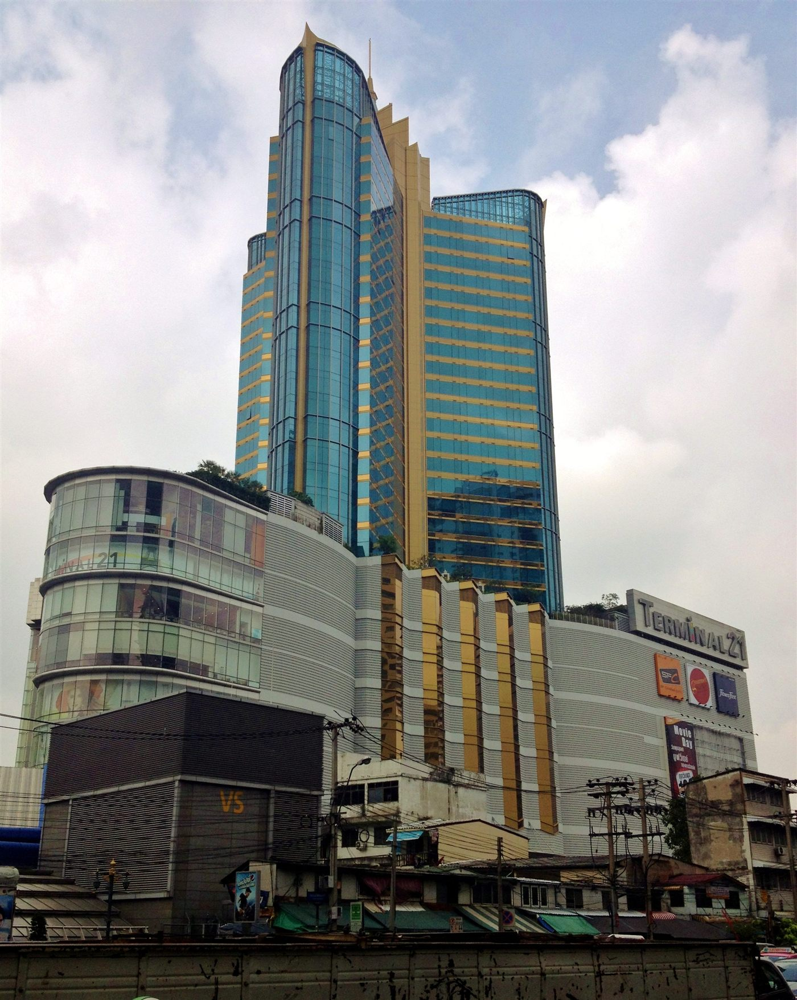

Asok · Sukhumvit · Bangkok
Terminal 21 Asok
Where journeys meet shopping.
Bring your collection to a shopping centre where local shops meet visitors from across the city.
- Retail setting
- Local shops · Fashion · Dining
- Rail access
- BTS Asok + MRT Sukhumvit
- Neighbourhood
- Asok · Sukhumvit

Photo: Francisco Anzola · CC BY 2.0 · Credits
The retail character
Terminal 21 Asok has an airport theme. Different areas are based on cities such as Tokyo, London and San Francisco. Local shops sell fashion alongside restaurants and entertainment.
Around the address
The mall is at Sukhumvit Soi 19 in the Asok business area. Its two train connections make it easy to include shopping in a journey through Bangkok.
Getting here
BTS Asok Exit 1 and MRT Sukhumvit Exit 3 connect to the mall. Visitors can reach it using either train system.
A fashion business perspective
Smaller shops give this centre a different feel from a row of large international stores. A compact space can show a focused clothing range, with a clear display and prices that are easy to see.
Beyond fashion
Food and film are also part of the centre's offer. People can combine a meal or a cinema visit with time in the shops.